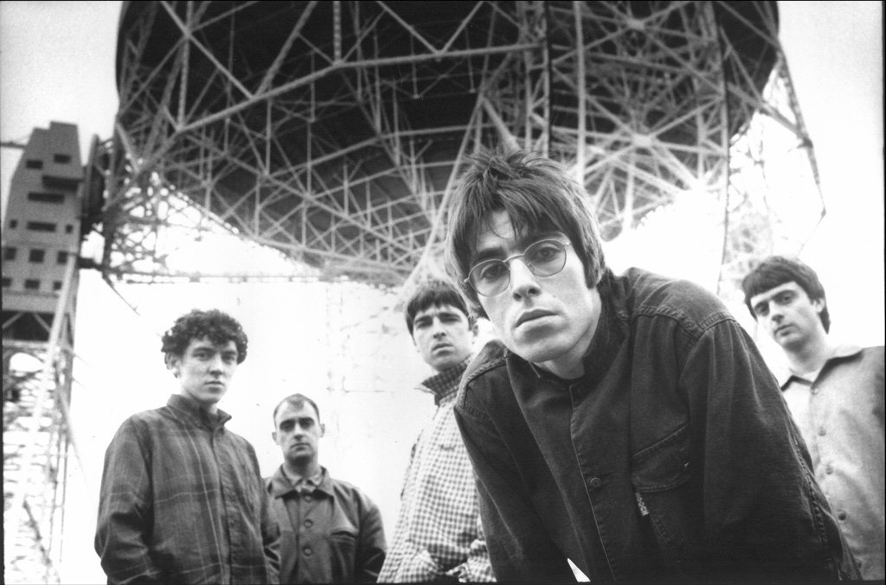

|  | |
| 결성 | 1991년 영국 잉글랜드 맨체스터 |
| 활동 시기 | 1994년 - 2009년 |
| 데뷔 | 1994년 싱글 'SuperSonic' |
| 장르 | 얼터너티브 록, 브릿팝 |
| 최종 멤버 |
리암 갤러거 Liam Gallagher (메인보컬)
노엘 갤러거 Noel Gallagher (기타, 보컬) 겜 아처 Gem Archer (기타) 앤디 벨 Andy Bell (베이스) |
| 탈퇴 멤버 |
폴 '본헤드' 아서스 Paul 'Bonehead' Arthurs (기타)
폴 '귁시' 맥기건 Paul 'Guigsy' McGuigan (베이스) 앨런 화이트 Alan White (드럼) 토니 맥캐롤 Tony McCarroll (드럼) |
1990년대 영국 록을 대표하는 잉글랜드 맨체스터 출신의 얼터너티브 록 또는 브릿팝 밴드. 제2의 비틀즈라 불렸을 만큼 영국 역사상 가장 인기있던 밴드 중 하나이자 전 세계적으로 폭넓은 대중성을 갖춘 밴드로 평가받는다.
기타리스트 겸 작곡가인 노엘 갤러거와 보컬리스트이자 프론트맨인 리암 갤러거 형제가 주축이었다. 둘 다 1960년대 밴드들의 영향을 받았다. 그래서, 90년대에 비틀즈의 영향을 강하게 받은 앨범들로 역대급 성공을 거두었다. 섹스 피스톨즈, 더 스미스, 스톤 로지스 등의 음악에서도 큰 영향을 받았으며, 90년대 밴드 음악에 매우 큰 영향을 끼쳤다. 블러, 펄프, 스웨이드 등과 함께 브릿팝의 전성기를 이끌었다.